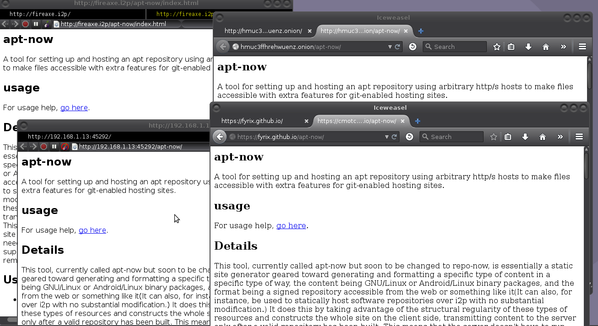

apt-now
A tool for setting up and hosting an apt repository using arbitrary http/s hosts to
make files accessible with extra features for git-enabled hosting sites.
usage
For usage help, go here.
Details
This tool, currently called apt-now but soon to be changed to repo-now, is
essentially a static site generator geared toward generating and
formatting a specific type of content in a specific type of way, the content being
GNU/Linux or Android/Linux binary packages, and the format being a signed repository
accessible from the web or something like it(It can also, for instance, be used to
statically host software repositories over i2p with no substantial modification.) It
does this by taking advantage of the structural regularity of these types of resources
and constructs the whole site on the client side, transmitting content to the server
only after a valid repository has been built. This means that the server doesn't have
to run any code at all to present the site to the end-user taking advantage of the
resource over the web, doesn't need to support ssh or remote desktop, and doesn't even
technically need to support ftp or git, as long as a way of transferring the
repository to the remote storage service can be included in the program.
Use Cases
- Personal Use: Independent, hobbyist, and self-employed developers can use
this program to host their own packages in a way which allows them to use
their package management interface, encourages them to learn more about their
choices of software and GNU/Linux distributions, and which provides an easy
way for them to back up their configuration.
- Educational Use: Educational and corporate training programs which work with
Open-Source projects can use this program to host code repositories for
employees during training, and in turn their trainers and supervisors can
follow versioned updates and use them to build redistributable packages of
viable projects.
- Activist Use: Activists who deliver things like privacy and security related
packages that might find their main repositories censored in some regions can
use this tool to maintain mirrors on sites which will prove much more
difficult to keep people from accessing, like "burner" accounts on free
file hosting sites, distributed file systems, and fire-and-forget hidden
services.
- Small Groups: Small groups of hobbyists and hackers can collaborate on
projects and take advantage of the instant clonability of github repositories
to create instant mirrors of their group's packages, sharing, testing, and
growing their projects potential userbase and lowering barriers to entry for
their ideas.
- Small Businesses: Small businesses can save costs on hosting their in-house
process software and encourage a culture of peer review by hosting both their
source repositories and tiny package repositories on github, bitbucket, or
similar versioned web hosting services.
- Large Businesses: Larger businesses which allow their employees to use "20%
time" or similar programs to develop projects can use this in conjunction with
tools like dh_make or fpm to roll out an instant package repository when a
program is ready for testing with a wider audience.
Versioning and Features
Right now, binary repository generation for Debian(APT Repositories) is stable and
source repository generation for Debian/Apt is nearing stability and are in usuable
form. While these are the only working types of repositories, the pre-hyphenate part
of this project's name will be "apt." Additionally, while an end user could use any
means to transfer the repository constructed by the apt-now tool, there is currently
only support for the use of github-pages as a hosting medium in the code. While this
remains the case the post-hyphenate part of this project's name will be "git." When
experimental support for F-Droid and Redhat(Yellowdog Updater) are complete,
additional ways of transferring the files will be considered and added, and the final
version will implement APT, YUM, and F-Droid repositories in an easy to configure,
polyglot(But probably not agnostic) way.
Repository Types
- Debian/APT
- Binary Repository(Complete, Stable, Generates Web Pages from package info)
- Source Repository(Final stages, Unstable)
- Notes: Depends on normal debian tools, including reprepro
- Android/F-Droid
- Binary Repository(Experimental, Unstable, broken, see fdroid-git. The
documentation for fdroidserver sometimes implies that the system requires
some small amount of server-side code.)
- Source Repository(Research phases)
- Notes: Android implies somewhat different separation of logic from GNU/Linux
- Redhat/YUM
- Binary Repository(Experimental, Still researching, but from the looks of
things it's really straightforward. I do not know how to build RPM packages
though, so we'll be working with Fedora's rpm's.)
- Source Repository(Experimental, Still researching, but the YUM paradigm
seems to be astoundingly simple.)
- Notes: None yet. But I'm sure there's something.
Transport Types
- Version-Controlled
- git(Complete as a way up updating the server, but can't be used to
retrieve individual software packages or update software. Cloning is pretty
much like making an instant mirror, which is cool.)
- hg(Not started, but straightforward. Pretty much the same as the git code
with very little alteration, just some transliterating of commands with
identical benefits.)
- svn(Not started, but basically the same story for the purposes of this
system.)
- File Transfer Based
- FTP(Not started, but really pretty easy, involves composing some commands
and configuring some usernames/passwords/keys/etc.)
- SFTP(Not started, but basically maps onto ftp. Probably like, one
additional line of code and a teeny bit of planning to support.)
- More Exotic, Sync, Filesharing oriented
- gittorrent(Not started, Probably easy, but will require a change to the
transport layer used by apt to treat git as a way of retrieving some
information.)
- Zeronet(Experimental, broken, probably requires a change to the transport
layer used by apt, see apt-transport-https,
apt-transport-tor.)
- bittorrent(Not started, probably will work with apt-p2p
or debtorrent with minimal to no
modification. Might have to generate some magnet links. Probably going to
conflict with Tor, but may be able to encourage use within i2p?)
- Freenet(Not started, but it would be really interesting to do freenet-as-
eepsite via some sort of proxy, possibly? Similar complications to Zeronet,
which I'll probably do first.)
- Self-Hosted
- Self Hosting with local static httpd written in go. Stupid easy to turn
on, just build the web site with the -l / --serve command line option
or the START_HTTPD option in the config file/environment variable.
- i2p eepsites are now also supported, and in fact this exact repository is
mirrored at fireaxe.i2p/apt-now, or
ov3ev5dplhdz6ipy442ftb4kzz4dembm3ifs2jo25qhiyw6f4ogq.b32.i2p/apt-now
if you need the b32 address. These are not set up automatically yet, but
all you have to do is point your eepsite at the apt-now directory.
- Tor HS are now also supported and automatic, and they are also available
as a mirror at hmuc3ffhrehwuenz.onion/apt-now
to prove the concept. These must be configured using the config file,
using the USE_TOR and LOCAL_ONLY_HTTPD options in conjunction with
the START_HTTPD option. If you're only interested in making packages
available to Tor users and not your own anonymity, you can omit
LOCAL_ONLY_HTTPD.
Misc Features
- Output a site. Collect information from within the packages, list them in
well-formatted markdown files, and emit the markdown into html files which
link to eachother, also a sitemap. This is all really easy to do on the client
side.
Screenshot

On Deck
- Break more functionality into smaller chunks. Right now the generate
function is huge and duplicates a pretty sizable amount of code. Write a
generic function for building according to script, then existing spec, then
guessing. This will make supporting more package types and more package
building tools and techniques easier.
Related Projects
Links
apt-now personal repository tool
This tool helps developers host their own applications by posting them to
github pages for download.
-d \ --directory\n
Work in this directory, uses current directory by default\n
-o \ --origin\n
URL of the repository\n
-c \ --codename\n
Codename you want to use, defaults is \"testing\"\n
-a \ --arch\n
Architecture you want to host, defaults to \"all\"\n
-p \ --policy\n
Policy of packages you want to host, defaults to \"main\"\n
-k \ --key\n
ID of the package signing key\n
-s \ --sources\n
Folder with the packages to include in the repo\n
-q \ --override\n
Name of the override file\n
-m \ --message\n
Message to include in the commit\n
-n \ --name\n
Human-readable name of the Repository\n
-v \ --desc\n
Detailed repository description\n
-c \ --check\n
Make sure the dependencies are installed\n
-r \ --reset\n
Re-generate all components of the repository\n
-u \ --user \ --org \ --organization\n
Us as user/organization page, post page to master branch\n
-l \ --serve
Serve with a local, static httpd on port 45291(debia).
-h \ --help\n
Display this help message\n
to add this repository to your Debian-based system:
echo "deb https://cmotc.github.io/apt-now/debian unstable main" | sudo tee /etc/apt/source.list.d/cmotc.github.io.list
wget -qO - https://cmotc.github.io/apt-now/cmotc.github.io.gpg.key | sudo apt-key add -
In this respository, you'll find